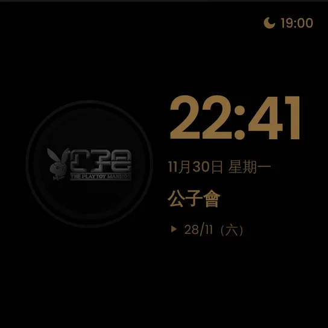
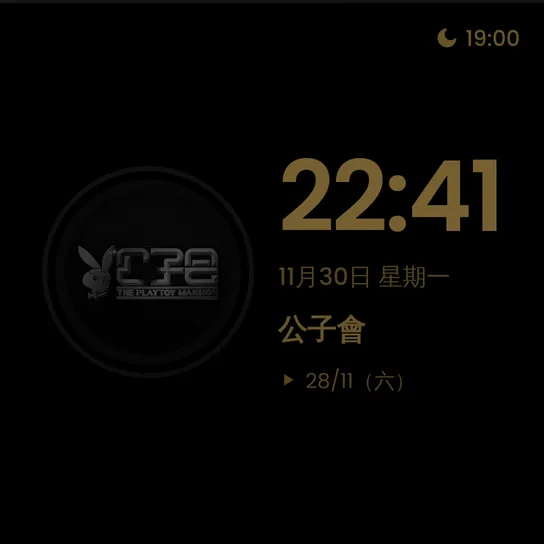
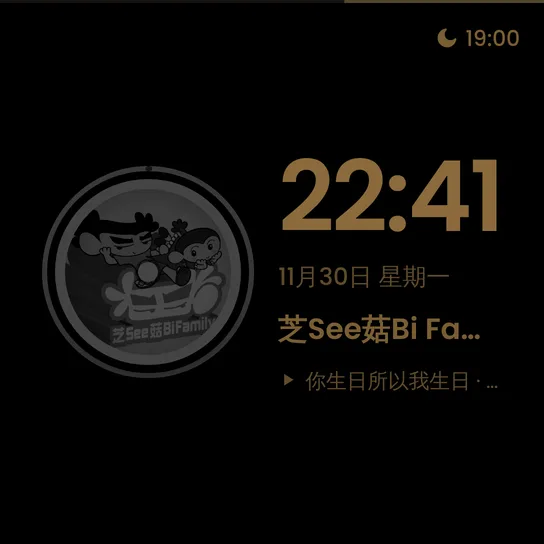
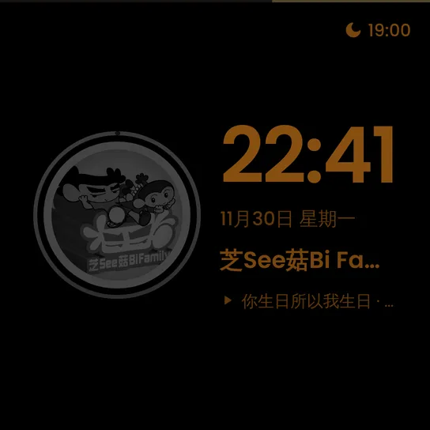
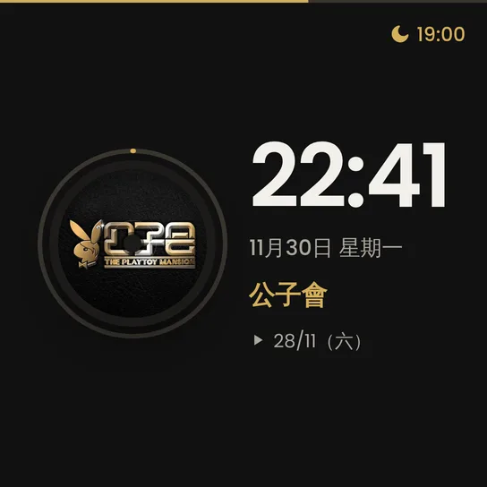
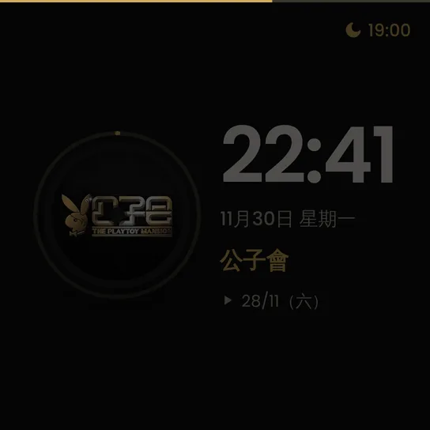
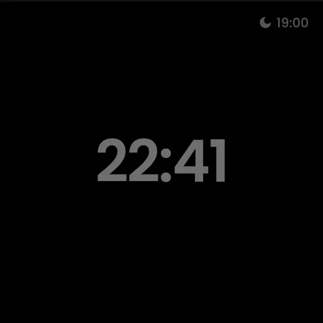
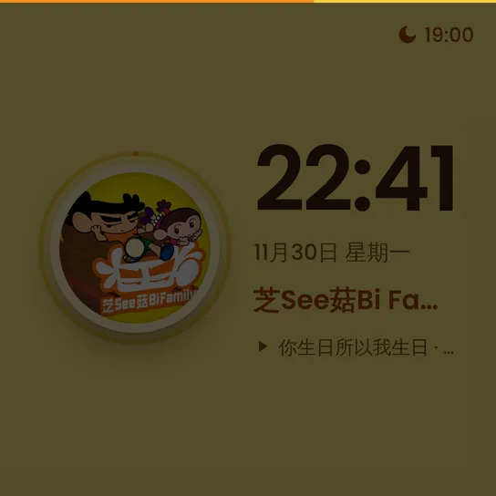
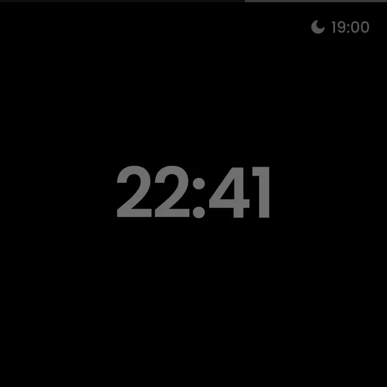

9c HomeView 夜間低光
已定：開咗睡眠 timer、行咗三分一時間之後，閒置畫面轉暗；先只限 HomeView 閒置畫面。下面係真 app 截圖（30 分鐘 timer 行咗 11 分鐘，剩 19:00），淺色節目用芝See菇Bi Family 做例。只係 app 自己用暗色、低對比，改唔到屏幕光度。
第 2 輪：D2 暗色統一定跟節目？
左：統一暗啡金（所有節目一樣）；右：跟節目強調色壓暗（公子會金、芝See 橙啡）。




已定（用戶 2026-11-20）
| # | 項目 | 決定 |
|---|---|---|
| 2 | 轉暗 | 60 秒淡入；減少動態直接切換 |
| 3 | 叫醒後再閒置 | 60 秒淡入轉暗 |
| 4 | 停 timer /「停用」 | 60 秒淡入轉返正常 |
| 5 | 時間到停播 | 一直暗到有人掂 |
| 6 | 過咗 05:00 | 自動 60 秒淡入轉返正常 |
幾時轉（例：30 分鐘 timer）
0–10 分鐘：正常閒置畫面
10 分鐘起（三分一）：慢慢轉暗（建議 60 秒淡入）
30 分鐘：停播
「播完呢集」：以揀嗰刻呢集剩餘時間計三分一。
三款暗法：深色節目（公子會）



三款暗法：淺色節目（芝See菇Bi Family）
淺色色調係考驗：D1 壓暗之後仍然係一大片黃啡色光。


要你決定
| # | 問題 | 選項 | 我建議 |
|---|---|---|---|
| 1 | 暗法 | D1 成個調暗 / D2 純黑底 + 暗暖色字 / D3 淨係時間 | D2：淺色節目都夠暗，仲睇到播緊乜 |
| 2 | 轉暗過程 | 一下切換 / 慢慢淡入（例如 60 秒） | 60 秒淡入；減少動態就直接切換 |
| 3 | 暗咗之後掂一下叫醒 | 叫醒返正常頁面；再閒置 30 秒返閒置畫面時即刻暗 / 要重新淡入 | 返正常頁面；再閒置時即刻暗（timer 仲過咗三分一） |
| 4 | 停 timer /「停用」 | 即刻轉返正常亮度 / 維持暗 | 即刻轉返正常 |
| 5 | 時間到停播之後 | 即刻轉返正常 / 維持暗幾分鐘（例如 5 分鐘）/ 一直暗到有人掂 | 一直暗到有人掂：半夜唔會突然變光 |
| 6 | 過咗 05:00 | 自動轉返正常 / 唔理 | 自動轉返正常 |